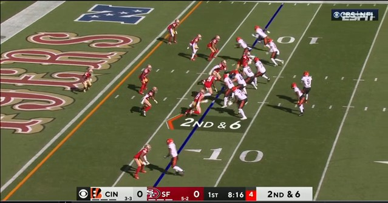
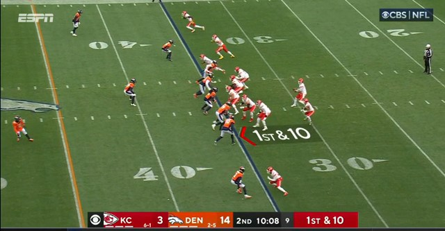

Bem vindo ao portal de notícias da NFL com conteúdo atualizado diariamente e com muita qualidade
NFL: Chiefs perdem 'sem' Taylor Swift; 49ers caem diante dos Bengals e deixam liderança da divisão

Na segunda leva dos jogos deste domingo pela semana 8 da NFL, o Kansas City Chiefs foi surpreendido e perdeu de forma esmagadora para o Denver Broncos por 24 a 9.
Curiosamente, Taylor Swift não estava no estádio. A mais recente namorada de Travis Kelce tem sido "pé quente" e em 2023 os Chiefs venceram todos os jogos em que ela esteve presente.
Patrick Mahomes teve uma tarde para esquecer, sem passes para touchdown e com duas interceptações. Do lado dos Broncos, Russell Wilson lançou 3 TD's.
Com este resultado, os Chiefs perdem pela primeira vez desde a semana 1 da temporada, mas seguem soberanos na liderança da AFC Oeste com 6 vitórias e duas derrotas. Os Broncos sobem para 3-5 e deixam a lanterna da divisão.
Estatisticas
- Patrick Mahomes - 24/38 passes completos e 0 TD
- Russell Wilson - 12/19 passes completos e 3 TDs
Purdy vai mal, e 49ers perdem terceira seguida

O San Francisco 49ers perdeu em casa em pleno Levi's Stadium para o Cincinnati Bengals por 31 a 17.
Brock Purdy continuou sua má fase após um começo de carreira impressionante na NFL. O quarterback dos Niners teve um passe para touchdown e lançou duas interceptações.
O único ponto positivo para os 49ers foi Christian McCaffrey. O running back chegou na endzone mais duas vezes e empatou o recorde da NFL com 17 jogos seguidos com ao menos um touchdown.
Pelo lado dos Bengals, Joe Burrow teve 3 passes para touchdown e nenhuma interceptação. Um desses passes foi para Ja'Marr Chase, que atingiu 100 jardas recebidas também.
Com este resultado, os 49ers perdem seu terceiro jogo seguido na temporada, caem para 5-3 e também deixam a liderança da NFC Oeste, que agora é do Seattle Seahawks (5-2), que venceu o Cleveland Browns neste domingo.
Estatisticas
- Joe Burrow - 28/32 passes completos e 3 TDs
- Brock Purdy - 22/31 passes completos e 1 TD